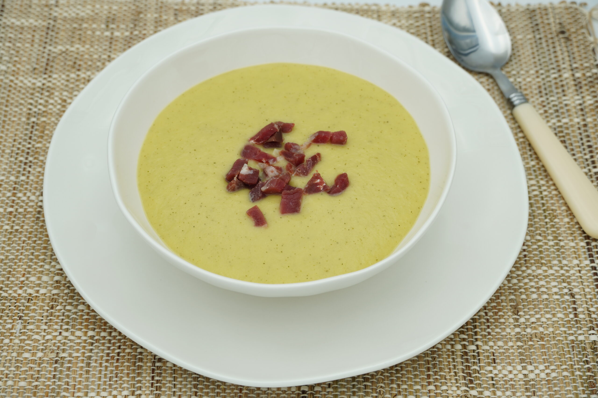

Crema de Calabacín

Una crema suave, saludable y ligera.
Ingredientes
- 2 calabacines medianos
- 1 patata mediana
- 1 cebolla pequeña
- 2 cucharadas de aceite de oliva
- 500 ml de caldo de verduras
- Sal y pimienta
- Nata (opcional)
Preparación
- Pelar y cortar en trozos el calabacín, la patata y la cebolla.
- Sofríe la cebolla en aceite de oliva.
- Añade el calabacín y la patata, y remueve durante 5 minutos.
- Agrega el caldo, la sal y la pimienta, y cocina durante 20 minutos a fuego medio.
- Tritura todo hasta obtener una crema homogénea. Añade nata si deseas una textura más suave.